Contents
inp = load("../data/assignmentSegmentBrain.mat"); q = 2; img_mri = inp.imageData; mask = inp.imageMask; img_mri_masked = img_mri.*mask; ne_mask = fspecial('gaussian',256,1.5); [a,b] = find(ne_mask>0); ter = img_mri_masked(img_mri_masked>0); len = size(ter); [ii,init_means] = kmeans(ter,3); [init_membership,final,bias,res_image,membership,objlist,means] = Q1(img_mri_masked,mask,init_means,ne_mask,q); pause(0.1);
Warning: Failed to converge in 100 iterations.
(a) q value
fprintf("q = %d.\n",q); % q value is a hyperparameter. The above value of q was chosen since it gave the most optimised cost function % and visually appealing Final image. pause(0.1);
q = 2.
(b) Neighbourhood mask
Following is the neighbourhood mask used. It is gaussian as was suggested to use in slides with sigma = 1.5, which is again a hyperparameter.
ne_mask_plot = ne_mask(min(a):max(a),min(b):max(b));
imagesc(ne_mask_plot);
colormap(gray);
title("Neighborhood Mask");
pause(0.1);
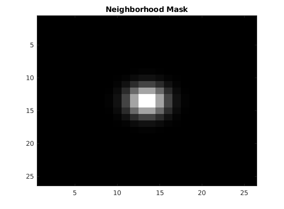 (c) Initial Means
fprintf("Initial Means =\n"); fprintf("%d\n",init_means(1)); fprintf("%d\n",init_means(2)); fprintf("%d\n",init_means(3)); % Using the k-means algorithm, we got our initial class means estimate. We % used 3 centres as paramter to the k-means functions after passing only % foreground values/pixels from the corrupted input image. % k-means would produce ideal cluster centres in case when bias is not % there and hence is a good initial estimate to start with. Also at start % we have no labeled data, we needed a unsupervosed algorithm and k-means % perfectly plays the role. pause(0.1);
Initial Means = 4.531302e-01 6.341783e-01 2.241592e-01
(d) Initial estimate for memberships
%Following are the initial membership values shown as images. We used the %plain FCM clustering algorithm without bias field correction. The %intuition behind is again the fact that we start by assuming there is no %bias and get a good estimate for the memeberships to the 3 classes. The %implementation is done as mentioned in slides for FCM clustering with the %means predicted as by the k-means algorithm. figure(); imshow(squeeze(init_membership(1,:,:))); title("Initial Membership for Class = 1"); pause(0.1); figure(); imshow(squeeze(init_membership(2,:,:))); title("Initial Membership for Class = 2"); pause(0.1); figure(); imshow(squeeze(init_membership(3,:,:))); title("Initial Membership for Class = 3"); pause(0.1);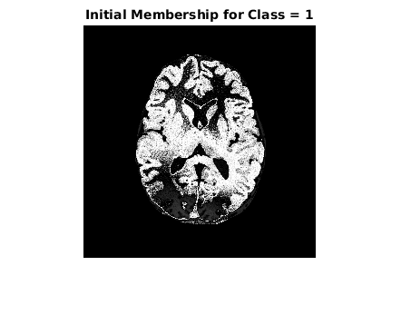 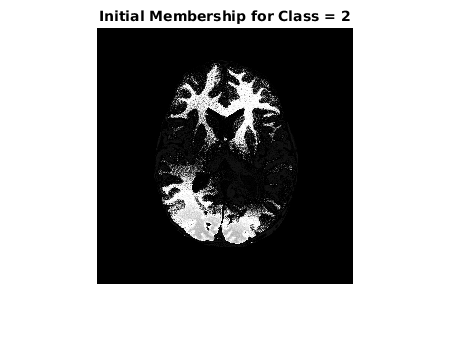 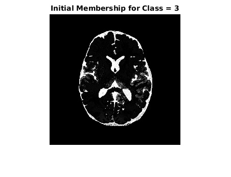
(e) Objective Function Value vs Iteration
As we can see, the value of the objective function reduces. We have used the termination criteria as when the change in objective function as compared to previous iteration is less than 1e-4.
i = 1; while(objlist(i)>0) fprintf("Objective Function Value at iteration %d = %d\n",i,objlist(i)); i = i+1; end figure(); plot(objlist(objlist>0)); title("Objective function value vs the iteration number")
Objective Function Value at iteration 1 = 7.632564e+01 Objective Function Value at iteration 2 = 5.065135e+01 Objective Function Value at iteration 3 = 4.314672e+01 Objective Function Value at iteration 4 = 4.039831e+01 Objective Function Value at iteration 5 = 3.866529e+01 Objective Function Value at iteration 6 = 3.741127e+01 Objective Function Value at iteration 7 = 3.645378e+01 Objective Function Value at iteration 8 = 3.574220e+01 Objective Function Value at iteration 9 = 3.524361e+01 Objective Function Value at iteration 10 = 3.490472e+01 Objective Function Value at iteration 11 = 3.466684e+01 Objective Function Value at iteration 12 = 3.450286e+01 Objective Function Value at iteration 13 = 3.439090e+01 Objective Function Value at iteration 14 = 3.431559e+01 Objective Function Value at iteration 15 = 3.427429e+01 Objective Function Value at iteration 16 = 3.425703e+01 Objective Function Value at iteration 17 = 3.425223e+01 Objective Function Value at iteration 18 = 3.425392e+01 Objective Function Value at iteration 19 = 3.425974e+01 Objective Function Value at iteration 20 = 3.426692e+01 Objective Function Value at iteration 21 = 3.427355e+01 Objective Function Value at iteration 22 = 3.427893e+01 Objective Function Value at iteration 23 = 3.428333e+01 Objective Function Value at iteration 24 = 3.428722e+01 Objective Function Value at iteration 25 = 3.429036e+01 Objective Function Value at iteration 26 = 3.429314e+01 Objective Function Value at iteration 27 = 3.429552e+01 Objective Function Value at iteration 28 = 3.429790e+01 Objective Function Value at iteration 29 = 3.430006e+01 Objective Function Value at iteration 30 = 3.430212e+01 Objective Function Value at iteration 31 = 3.430367e+01 Objective Function Value at iteration 32 = 3.430537e+01 Objective Function Value at iteration 33 = 3.430655e+01 Objective Function Value at iteration 34 = 3.430766e+01 Objective Function Value at iteration 35 = 3.430853e+01 Objective Function Value at iteration 36 = 3.430922e+01 Objective Function Value at iteration 37 = 3.430995e+01 Objective Function Value at iteration 38 = 3.431034e+01 Objective Function Value at iteration 39 = 3.431083e+01 Objective Function Value at iteration 40 = 3.431101e+01 Objective Function Value at iteration 41 = 3.431121e+01 Objective Function Value at iteration 42 = 3.431155e+01 Objective Function Value at iteration 43 = 3.431175e+01 Objective Function Value at iteration 44 = 3.431186e+01 Objective Function Value at iteration 45 = 3.431192e+01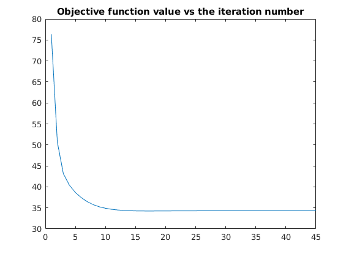
(f) Final Results
pause(0.1); figure(); imshow(inp.imageData); title("Corrupted image"); pause(0.1); figure(); imshow(squeeze(membership(1,:,:))); title("Optimal Membership for Class = 1"); pause(0.1); figure(); imshow(squeeze(membership(2,:,:))); title("Optimal Membership for Class = 2"); pause(0.1); figure(); imshow(squeeze(membership(3,:,:))); title("Optimal Membership for Class = 3"); pause(0.1); figure(); imagesc(permute(membership,[2,3,1])); title('Final Segmentation based on membership'); pause(0.1); figure(); imshow(bias); title("Optimal bias-field image estimate"); pause(0.1); figure(); imshow(final); title("Bias-removed image"); pause(0.1); figure(); imshow(res_image); title("Residual Image");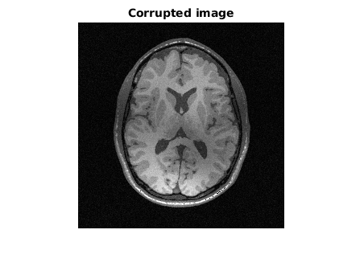 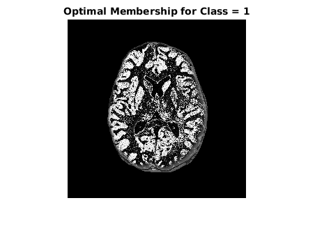 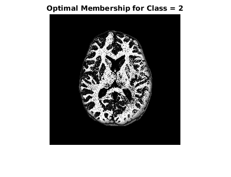 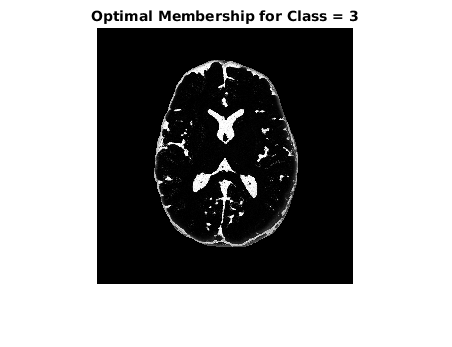 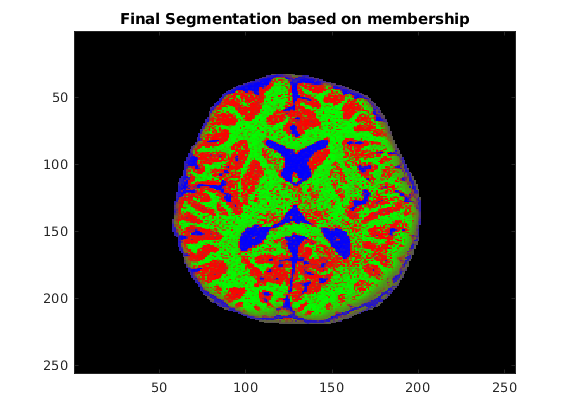 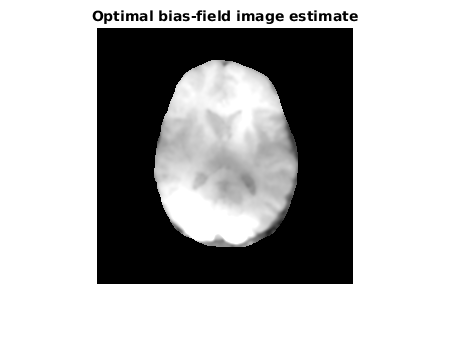 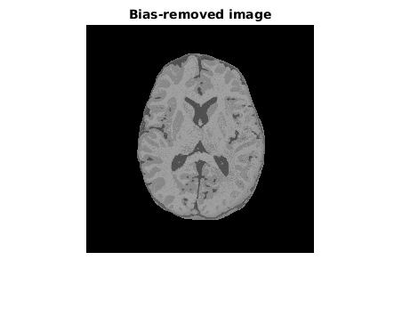 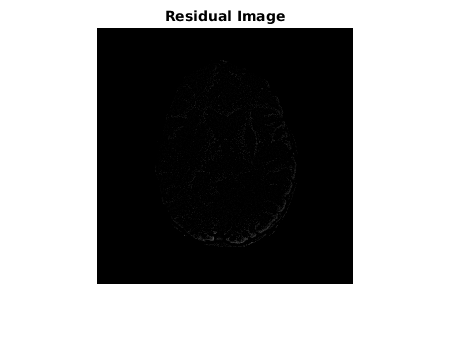
(f) Final Means
fprintf("Final Means =\n"); fprintf("%d\n",means(1)); fprintf("%d\n",means(2)); fprintf("%d\n",means(3)); fprintf("\n"); pause(0.1);
Final Means = 5.270334e-01 6.264939e-01 3.051477e-01
Question
%Explain if the formulation discussed in class leads to a unique solution. If not, (i) pro- %pose a scheme (in theory) to ensure a unique solution and (ii) implement it.
Solution
%No, it wont lead to a unique solution. A simple counter case can be %taken as follows: suppose the final means = [a,b,c] is an optimal solution %the any permutation of it, say means = [c,a,b] is also an optimal %solution, with the corresponding channels in membership matrix permuted in same %way. This final solution directly depends on the initial estimates of the %means (Can be seen from the update equations). The final order of the means follows the same order as the initial means. %Hence, by fixing the ordering of the initial means, say in increasing %order, we would always achieve the same final optimum solution for means. %Implementation init_means_sorted = sort(init_means); [init_membership,final,bias,res_image,membership,objlist,sort_means] = Q1(img_mri_masked,mask,init_means_sorted,ne_mask,q); % Final Unique Means fprintf("Unique Means =\n"); fprintf("%d\n",sort_means(1)); fprintf("%d\n",sort_means(2)); fprintf("%d\n",sort_means(3));
Unique Means = 3.041189e-01 5.252590e-01 6.243770e-01